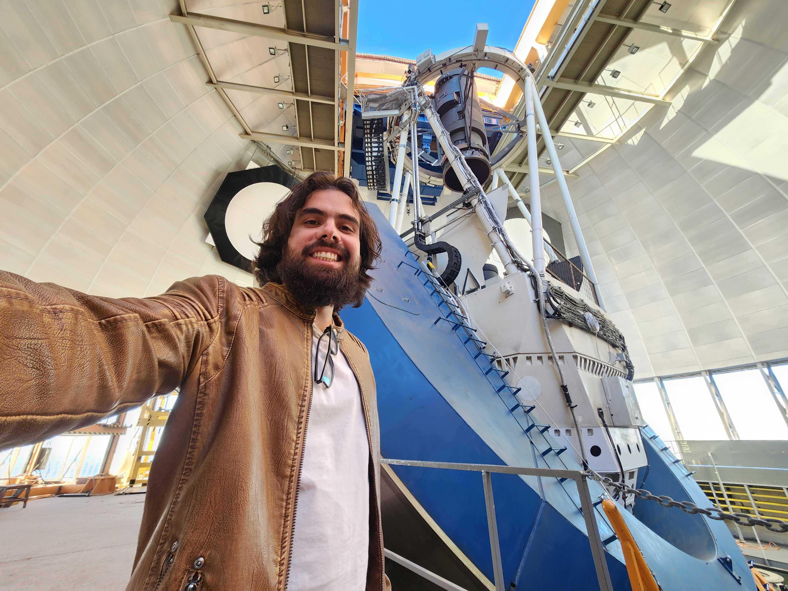
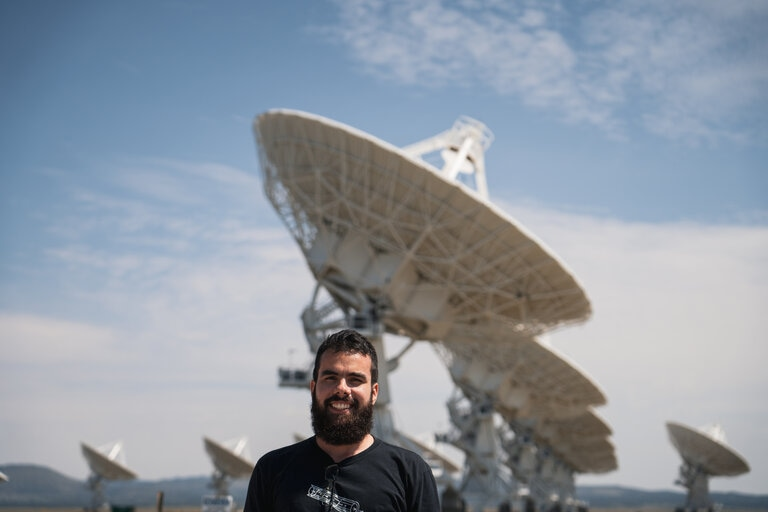
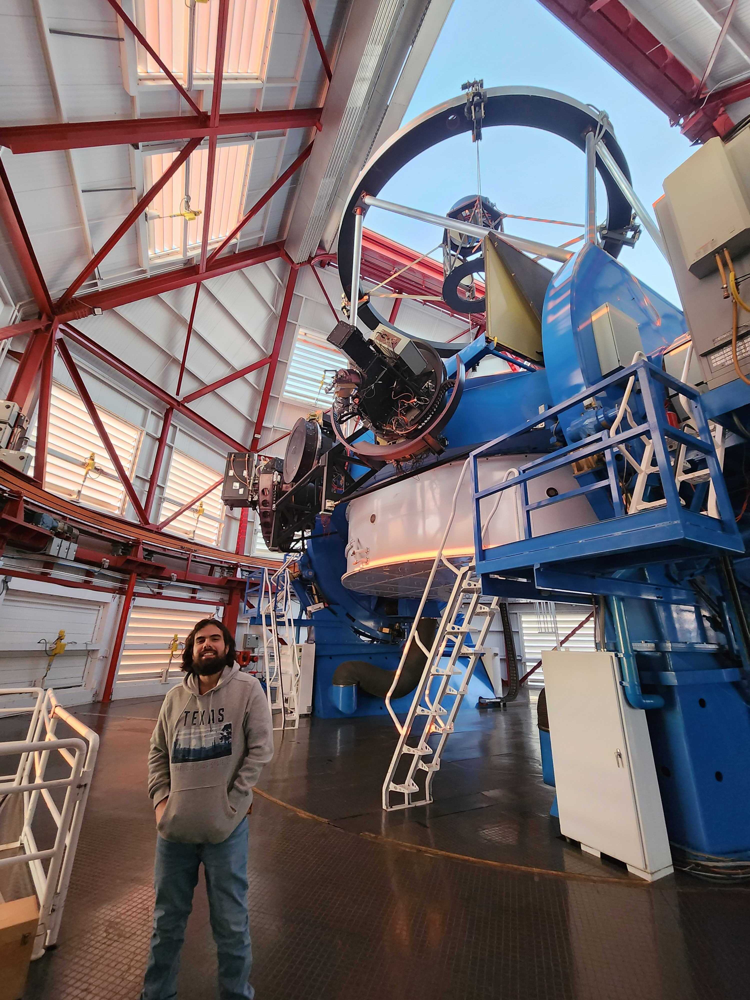
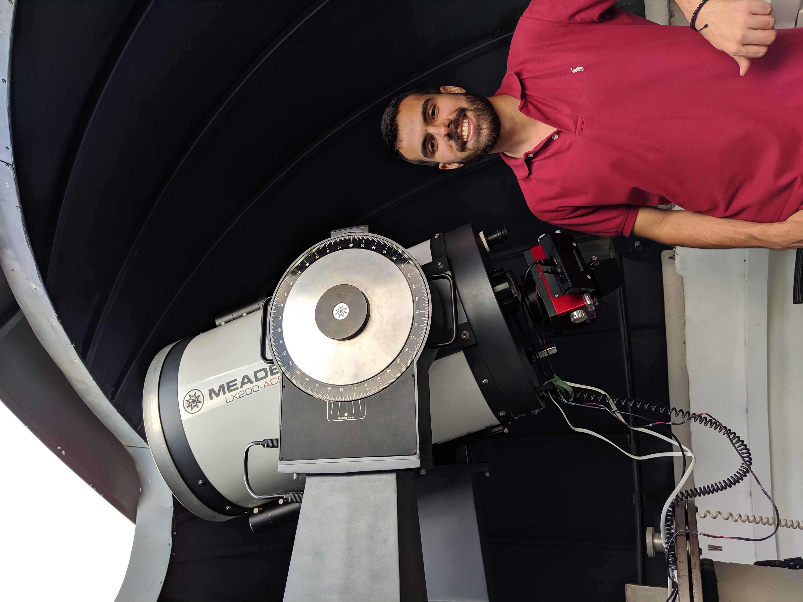
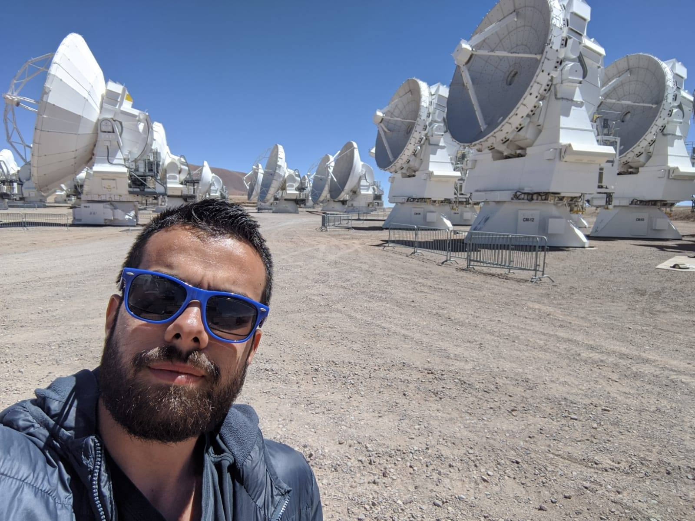
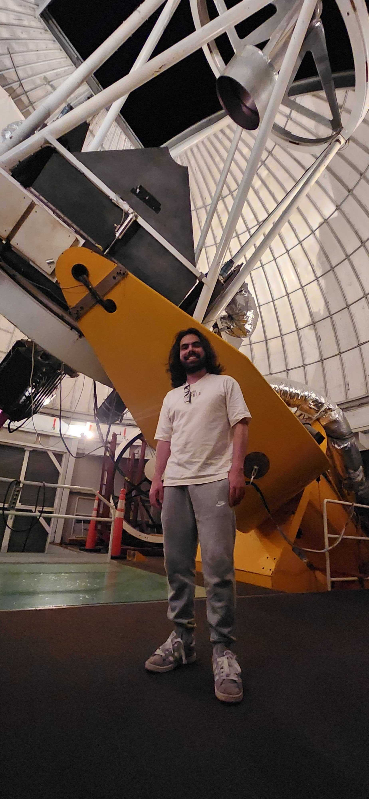
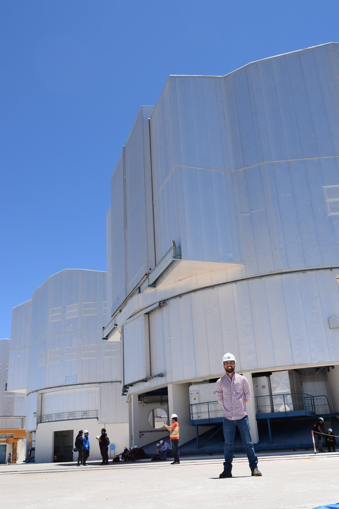
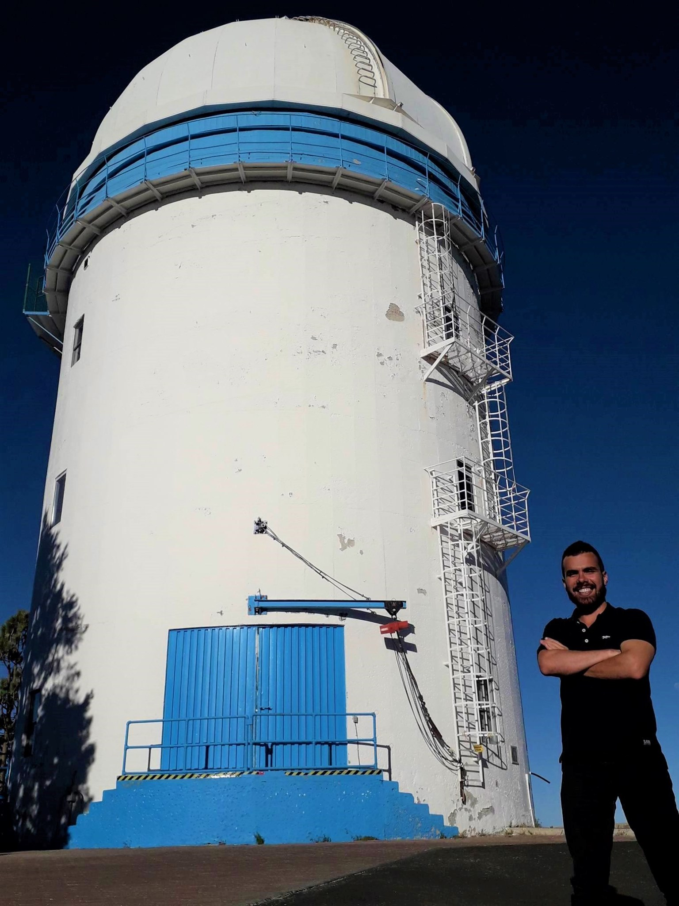

Observar es una de mis partes favoritas de la astronomía, desde planificar las observaciones, tomar los datos, hasta reducirlos y analizarlos.
Mi investigación ha involucrado una variedad de instrumentos y técnicas, incluyendo imágenes y espectroscopía óptica, espectroscopía infrarroja, y radio interferometría. En esta página destaco algunos de los telescopios y observatorios que he utilizado en mi trabajo, junto con algunos que he tenido la oportunidad de visitar.

Dark Energy Camera (DECam)
Telescopio Víctor M. Blanco (4 m), Observatorio Inter-Americano Cerro Tololo, La Serena, Chile.

Very Large Array (VLA)
Socorro, New Mexico, USA.

Telescopio Magellan Baade
6.5 m, Observatorio Las Campanas, La Serena, Chile.

Observatorio UTP
telescopio de 12 pulgadas, Universidad Tecnológica de Pereira, Pereira, Colombia.

Atacama Large Millimeter/submillimeter Array (ALMA)
San Pedro de Atacama, Chile.

Observatorio MDM
telescopio de 2.4 m, Observatorio Kitt Peak, Tucson, Arizona, USA.

Very Large Telescope (VLT)
Observatorio Paranal, Antofagasta, Chile.

Observatorio San Pedro Mártir
telescopio de 2 m, Ensenada, Mexico.